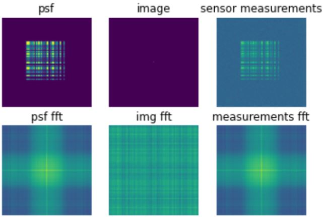

{kind=link}
{kind=link}
{kind=link}
{kind=link}
{kind=link}
GAN Aided Image Reconstruction
Completed: 3 March, 2022
PhD Advisor: Yucheng Zheng
Principal Investigator: Dr. Salman Asif
As part of my research under the Computational Sensing and Information Processing Lab (CSIP Lab) at the University of California, Riverside, I explored how a pre-trained Generative Adversarial Networks (GAN) could be used to help aid in Compressed Sensing and Image Reconstruction problems. This involved randomly sampling sensor measurements and using a GAN and gradient descent to 'guess' then converge to a similar looking image.
Introduction
To begin this project, I first implemented a version of the paper "Deconvolving Diffraction for Fast Imaging of Sparse Scenes" which utilized a diffractive lens to spread a point in the scene using a point-spread-function (PSF). Using an implementation of CSIP Lab's Lensless Camera point-spread-function, I was able to mimic the same behavior.
The above photo shows the PSF, along with a grey-scale image of a single pixel at the center. The produced sensor measurements accurately reflects the PSF for a single pixel. As more pixels are added, the PSF grows in complexity. To the left is an example of the sensor measurements in RGB.
With this implementation, I was able to reconstruct the position of pixels with as little as 5% of the sensor measurements. But instead of doing something very motion-capture inspired like the Deconvolving Diffraction paper, we decided to move towards natural scenes. This is where several pre-trained Generative Adversarial Networks were introduced.
Adding in the GAN
For this project, I tried out several different GANs, all of which resulted in the same problem. The first network I tried was a Deep Convolutional GAN (DCGAN) trained on FashionGen, a dataset of general fashion which was contained in the PyTorch Hub. Here I was able to reconstruct small (64,64) images using this DCGAN and gradient descent with similar success. I could use as little as 1% of the sensor measurements as end up with a reasonably comparable image. Unfortunately, because of the small sizes, the images themselves did not look great. Moving up to higher resolution images did produce promising results.
Here is an example of the results, using a pre-trained Progressive GAN (PGAN) trained on celebAHQ-256, which is a dataset trained on celebrity photos also in the PyTorch Hub. The first image is our test image that was generated by the PGAN. I obtained its sensor measurements and then did a 25% sub-sampling. From here, I initialized a random start, and began to guess and refine using the PGAN and gradient descent. The images (bottom left) depict the first iteration, the last iteration, and a transformation between the two.
Results and Future Work
I began to hit a number of issues when trying to incorporate images that were not generated by the GAN itself. I obtained images directly from the dataset and attempted to reconstruct them from an initial guess, but the optimized image never resembled the real life image. I believe this had to do with mode collapse, and the limited domain of GANs as they are trained and optimized. Several papers like "Seeing what a GAN Cannot Generate discuss in detail the reasons that mode collapse happens. At the end of the day, however, I proved it was possible to reconstruct images close to the original based off as little as 5% of information. While this may not be useful in the image domain, it might be applicable in other domains such as sound.
For more details on the entire project, please checkout my github repository!